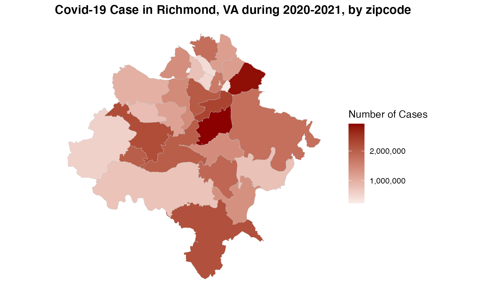
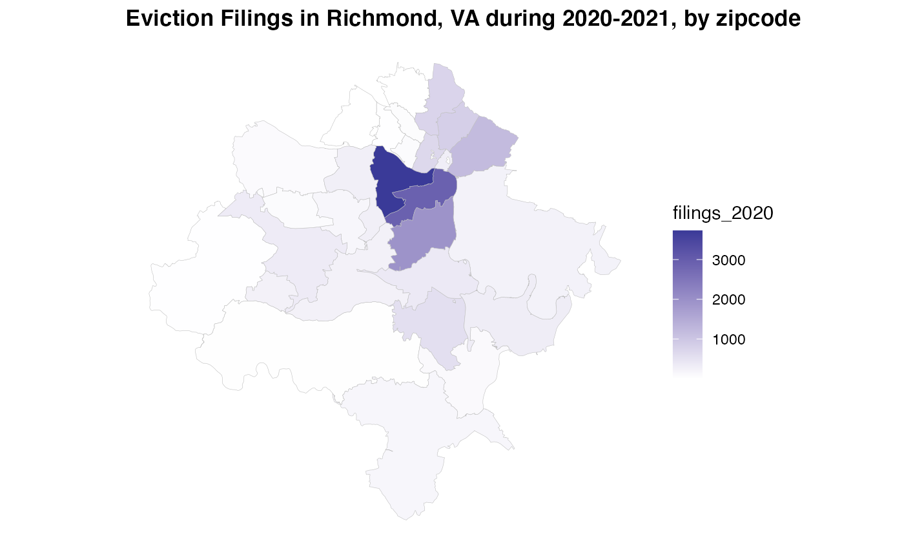
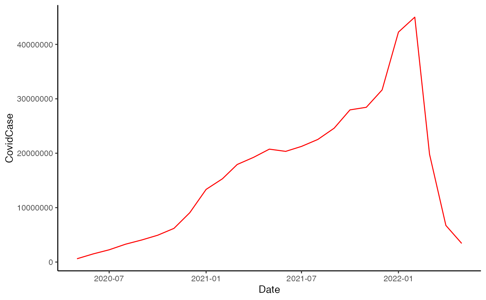
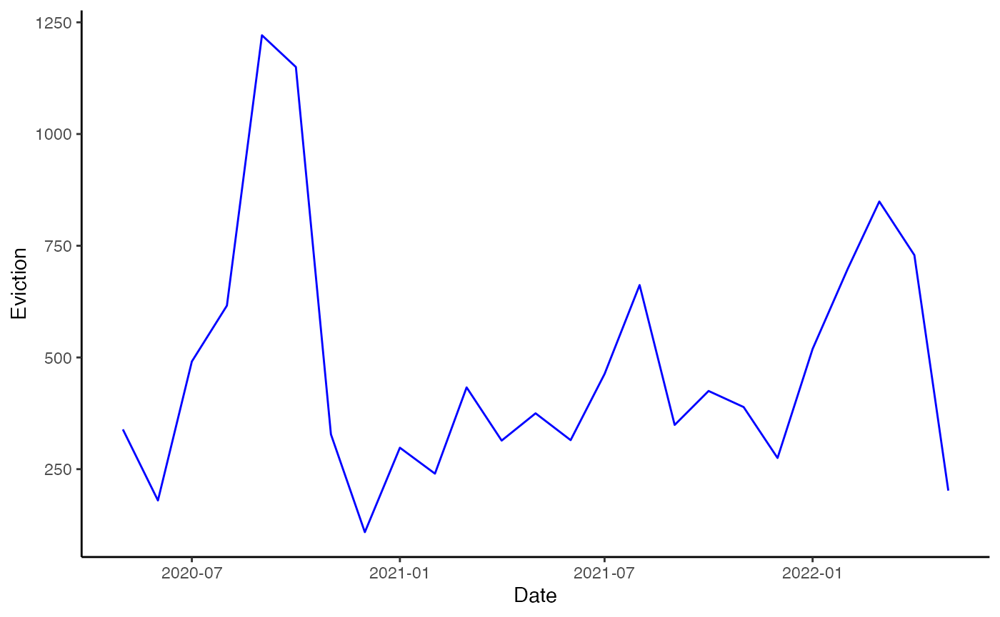
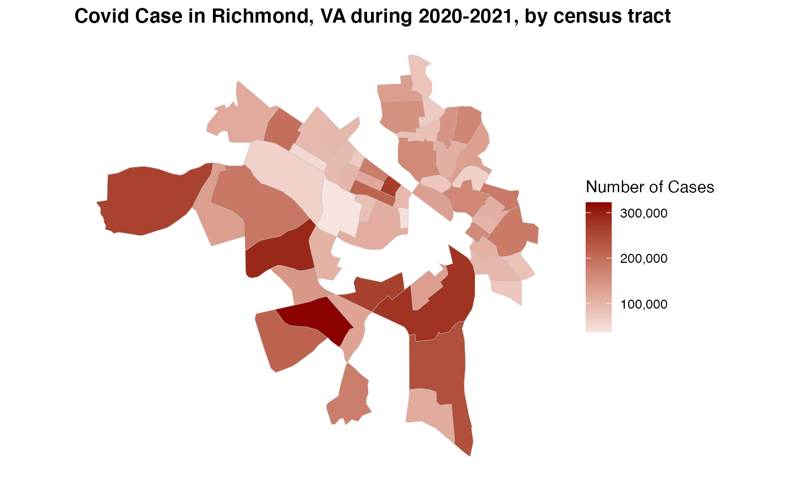
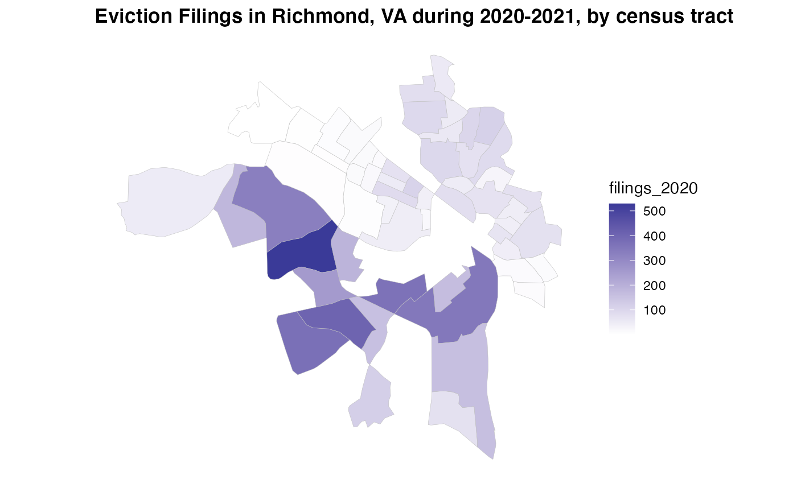

vignettes/Covid-19-and-Evictions-Crosswalk.Rmd
Covid-19-and-Evictions-Crosswalk.RmdSample provided by Shuyu Jin (geojsy@umd.edu)
ZIP Codes are widely used for delivering service, mapping and other spatial analyses. However, there is a problematic effect since ZIP Codes’ boundaries are not created for analytical purposes. This effect is notorious for distorting policy-related analysis and misrepresentative results through inaccurate patterns displayed on the map (Wilson and Din, 2018).
The HUD ZIP Code crosswalk files aim to allocate address locations from ZIP Codes to other geographies or vice versa. Specifically, merging aggregated data at the ZIP Code level with existing data sets to get more informative data for analysis (Din and Wilson, 2020). The following example demonstrates how to use the crosswalk function to display COVID-19 cases and evictions based on zip codes and census tracts.
Weekly eviction filing data for Richmond, provided by Princeton’s Eviction Lab, and the COVID-19 data set, downloaded from Virginia Open Data Portal.
To improve performance, use tigris caching.
options(tigris_use_cache = TRUE)
library(readr)
richmond_monthly_2020_2021 <- read_csv("Data/richmond_monthly_2020_2021.csv")
VA_COVID_19_PublicUseDataset_ZIPCode <- read_csv("Data/VA-COVID-19-PublicUseDataset-ZIPCode.csv")
# Using tigris package to download Richmond shapefiles
richmond_shapefile_zctas <- tigris::zctas(cb = FALSE, starts_with = "23")
richmond_shapefile_tracts <- tigris::tracts(state = "51", county = "760", cb = TRUE)Cleaning date objects
library(lubridate)
VA_COVID_19_PublicUseDataset_ZIPCode$date <- lubridate::mdy(VA_COVID_19_PublicUseDataset_ZIPCode$`Report Date`)
VA_COVID_19_PublicUseDataset_ZIPCode$monthYear <- paste(as.character( lubridate::month(VA_COVID_19_PublicUseDataset_ZIPCode$date)), "-", as.character( lubridate::year(VA_COVID_19_PublicUseDataset_ZIPCode$date)), sep="" )
VA_COVID_19_PublicUseDataset_ZIPCode$monthYear <- my(VA_COVID_19_PublicUseDataset_ZIPCode$monthYear)
VA_COVID_19_PublicUseDataset_ZIPCode$`Number of Cases` <- as.integer(VA_COVID_19_PublicUseDataset_ZIPCode$`Number of Cases`)
#> Warning: NAs introduced by coercion
# Aggregating a new data frame with number of cases, monthYear, and ZIP code
covidCases <- aggregate(`Number of Cases` ~ monthYear + `ZIP Code`, data = VA_COVID_19_PublicUseDataset_ZIPCode, FUN = sum)Aggregating racial majority based on eviction fillings data
eviction_race <- aggregate(`filings_2020` ~ month + GEOID + racial_majority, data = richmond_monthly_2020_2021, FUN = sum)
eviction_no_race <- aggregate(`filings_2020` ~ month + GEOID, data = richmond_monthly_2020_2021, FUN = sum)Aggregating and classifying COVID cases and eviction data based on spatial and temporal condition
covidCases_spatial <- aggregate(`Number of Cases` ~ `ZIP Code`, data = covidCases, FUN = sum)
covidCases_temporal <- aggregate(`Number of Cases` ~ monthYear, data = covidCases, FUN = sum)
eviction_no_race_spatial <- aggregate(filings_2020 ~ GEOID, data = eviction_no_race, FUN = sum)
eviction_no_race_temporal <- aggregate(filings_2020 ~ month, data = eviction_no_race, FUN = sum)
eviction_no_race_temporal$month <- my(eviction_no_race_temporal$month)
richmond <- inner_join(richmond_shapefile_zctas, eviction_no_race_spatial, by = c("ZCTA5CE20" = "GEOID" ))
richmond <- inner_join(richmond, covidCases_spatial, by = c("ZCTA5CE20" = "ZIP Code" ))
ggplot() +
geom_sf(data = richmond, aes(fill= `Number of Cases`), size = 0.1, colour = "grey") +
scale_fill_gradient2(low = "grey", mid = "white", high = "darkred", labels = comma) +
ggtitle("Covid-19 Case in Richmond, VA during 2020-2021, by zipcode") +
coord_sf() +
theme(plot.title = element_text(face = "bold"),
axis.text.x = element_blank(),
axis.text.y = element_blank(),
axis.ticks = element_blank(),
panel.background = element_rect(fill = "white"))
ggplot() +
geom_sf(data = richmond, aes(fill= `filings_2020`), size = 0.1, colour = "grey") +
scale_fill_gradient2() +
ggtitle("Eviction Filings in Richmond, VA during 2020-2021, by zipcode") +
coord_sf() +
theme(plot.title = element_text(face = "bold"),
axis.text.x = element_blank(),
axis.text.y = element_blank(),
axis.ticks = element_blank(),
panel.background = element_rect(fill = "white"))
richmondTemporal <- inner_join(eviction_no_race_temporal, covidCases_temporal, by = c("month" = "monthYear"))
colnames(richmondTemporal) <- c("Date", "Eviction","CovidCase")
options(scipen = 999)
ggplot(richmondTemporal, aes(Date)) +
geom_line(aes(y = CovidCase),color = "red") +
theme(axis.line = element_line(colour = "black"),
panel.background = element_blank())
ggplot(richmondTemporal, aes(Date)) +
geom_line(aes(y = Eviction), col = "blue") +
theme(axis.line = element_line(colour = "black"),
panel.background = element_blank())
Although the number of COVID cases and eviction filings does not appear to be positively related, in particular, eviction filings have almost returned to their pre-pandemic levels but increased in the early month of 2021 in Richmond. It provides an idea of what factors lead to changes in eviction.
richmond$ZCTA5CE20 <- as.numeric(richmond$ZCTA5CE20)Crosswalk zipcode to census tract
a = as.data.frame(richmond)
covidcases_cw <- crosswalk(data = a, geoid = "zip", geoid_col = "ZCTA5CE20",
cw_geoid = "tract", cw_geoid_col = "Number of Cases", method = "tot")
evi_cw <- crosswalk(data = a, geoid = "zip", geoid_col = "ZCTA5CE20",
cw_geoid = "tract", cw_geoid_col = "filings_2020", method = "tot")Aggregating date with census tract level
evi_tract <- aggregate(filings_2020 ~ tract, data = evi_cw, FUN = sum)
evi_tract$filings_2020 <- as.integer(evi_tract$filings_2020)
cov_tract <- aggregate(`Number of Cases` ~ tract, data = covidcases_cw, FUN = sum)
cov_tract$`Number of Cases` <- as.integer(cov_tract$`Number of Cases`)
evi <- inner_join(richmond_shapefile_tracts, evi_tract, by = c("GEOID" = "tract"))
covid <- inner_join(richmond_shapefile_tracts, cov_tract, by = c("GEOID" = "tract"))
ggplot() +
geom_sf(data = covid, aes(fill= `Number of Cases`), size = 0.1, colour = "grey") +
scale_fill_gradient2(low = "grey", high = "darkred", labels = comma) +
ggtitle("Covid Case in Richmond, VA during 2020-2021, by census tract") +
coord_sf() +
theme(plot.title = element_text(face = "bold"),
axis.text.x = element_blank(),
axis.text.y = element_blank(),
axis.ticks = element_blank(),
panel.background = element_rect(fill = "white"))
ggplot() +
geom_sf(data = evi, aes(fill= `filings_2020`), size = 0.1, colour = "grey") +
scale_fill_gradient2() +
ggtitle("Eviction Filings in Richmond, VA during 2020-2021, by census tract") +
coord_sf() +
theme(plot.title = element_text(face = "bold"),
axis.text.x = element_blank(),
axis.text.y = element_blank(),
axis.ticks = element_blank(),
panel.background = element_rect(fill = "white"))
A noteworthy point, the number of COVID and eviction filings is not significantly correlated. In fact, by 2021, Richmond remained 25% below the historical average (Hepburn, Jin, & Fish et al., 2022). To answer why the number of eviction filings in Richmond has been changed during the pandemic, combing with time, the CDC moratorium expiration might be a significant reason. Since during September 4, 2020, and July 31, 2021, CDC’s moratorium on evictions for rent assistance for tenants and landlords helped prevent at least 1.55 million eviction filings nationwide (Rangel, Haas, and Lemmerman et al., 2021).
Meanwhile, crossing data from ZIP Codes to census tracts yielded less accurate results. We got some discrete or even N/A results with COVID cases by census tracts. Therefore, it should be noted that there are considerations when crosswalking data to smaller geographies, particularly census tracts. The fundamental reason should be the ZIP Codes cross-cut numerous tracts that do not follow the boundaries closely (Din and Wilson, 2020).
CDC. “CDC Issues Eviction Moratorium Order in Areas of Substantial and High Transmission.” https://www.cdc.gov/media/releases/2021/s0803-cdc-eviction-order.html (Accessed 05/12/2022)
Din, Alexander, and Ron Wilson. “Crosswalking ZIP Codes to Census Geographies.” Cityscape 22, no. 1 (2020): 293-314.
Jasmine Rangel, Jacob Haas, Emily Lemmerman, et al. “Preliminary Analysis: 11 Months of the CDC Moratorium.” Eviction Lab. https://evictionlab.org/eleven-months-cdc/. (Accessed 05/12/2022)
Peter Hepburn, Olivia Jin, Joe Fish, et al. “Preliminary Analysis: Eviction Filing Patterns in 2021.” Eviction Lab. https://evictionlab.org/us-eviction-filing-patterns-2021/. (Accessed 05/14/2022)
Peter Hepburn, Renee Louis, and Matthew Desmond. Eviction Tracking System: Version 1.0. Princeton: Princeton University, 2020. www.evictionlab.org. (Accessed 05/01/2022)
Virginia Open Data Portal. VDH-COVID-19-PublicUseDataset-ZIPCode. https://data.virginia.gov/Government/VDH-COVID-19-PublicUseDataset-ZIPCode/8bkr-zfqv/data. (Accessed 05/01/2022)
Wilson, Ron, and Alexander Din. “Understanding and enhancing the US Department of housing and urban development’s ZIP code crosswalk files.” Cityscape 20, no. 2 (2018): 277-294.